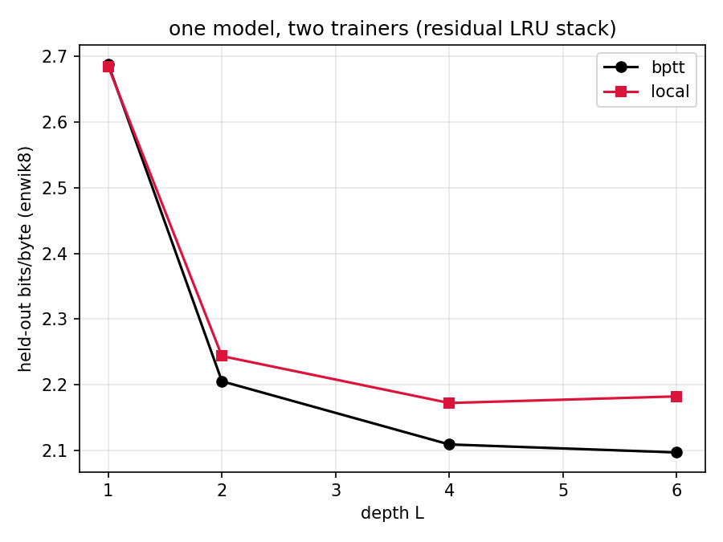

Suppose you have a deep recurrent network and you are forbidden from backpropagating anywhere - not backward through time, not backward through depth. Each layer may only touch quantities it can compute locally, online, as the sequence streams past. Can such a thing still get better with depth, or does stacking layers without a global error signal just buy you a very expensive single layer?
This is the make-or-break question for a research thread I've been pulling on for a while: the synthesis of Zucchet et al.'s exact online gradients for Linear Recurrent Units (eligibility traces kill backprop-through-time) with DiffusionBlocks-style per-block local objectives (block-wise losses kill backprop-through-depth). The two methods attack orthogonal axes - one temporal, one architectural - and the observation that started all this is that they compose: if every layer is its own block with its own loss, every layer is a "last layer" in Zucchet's sense, and the forward-mode trace rule computes its local gradient exactly, in constant memory, with no stored trajectory.
Exact with respect to what is the entire question, though. The traces give you the true gradient of each layer's local objective - they emphatically do not give you the end-to-end task gradient, because the local objective has no idea what the layers above need. CPU-scale diagnostics had already confirmed both halves of this: cosine alignment of the trace gradient against autodiff on the local loss sits at 1.0000 to machine precision, while alignment against full-stack BPTT decays with depth (~0.75 by five layers). So the gradients are genuinely different objects. The only way to find out whether the difference matters is to train the same model both ways and look at held-out loss. Hence: one model, two trainers.
The model is a residual stack of \(L\) complex diagonal LRU layers (eigenvalues ring-initialised near \(|\lambda|=1\)), byte-level language modelling on enwik8, with a cross-entropy head on top. Identical architecture, identical data order, two training regimes:
No backward pass crosses a layer boundary, and no backward pass crosses a timestep. Each layer's update at time \(t\) is assembled from its instantaneous local error and its forward-accumulated trace \(e^\theta_t = \partial s_t / \partial \theta\), which for diagonal recurrence costs the same order of memory as the weights themselves - the same structural luck I keep exploiting in everything. Both trainers got their own learning-rate probe (it'd be unsporting to tune for one and bill the other), both picked \(3\times10^{-3}\), 3000 steps each, depth swept over \(\{1,2,4,6\}\).
Since the whole claim is exactness, here is the rule with nothing elided. Layer \(\ell\) is an LRU: complex diagonal recurrence, linear readout, residual connection. With \(u^\ell_t\) denoting the layer's input stream (the residual stream from below, stop-gradded), \[s^\ell_t = \lambda^\ell \odot s^\ell_{t-1} + B^\ell u^\ell_t, \qquad y^\ell_t = \mathrm{Re}\!\left(C^\ell s^\ell_t\right) + D^\ell u^\ell_t, \qquad u^{\ell+1}_t = u^\ell_t + y^\ell_t\] with \(\lambda^\ell \in \mathbb{C}^N\) ring-initialised, \(|\lambda_i|\) parameterised through \(\nu_i = \exp(-e^{\log\nu_i})\) and phase \(\theta_i\) as in Zucchet et al. so stability is free.
Local objectives. Each hidden layer owns a stateless head \(g^\ell\) and a per-layer loss attached to its own output at every step: \[\mathcal{L}^\ell_t = \left\| g^\ell\!\big(y^\ell_t\big) - \tilde{x}_{t+1} \right\|^2\] where \(\tilde{x}_{t+1}\) is the (noised) embedding of the next byte - the denoising target. The final layer instead owns the decoder head and the task loss, \(\mathcal{L}^L_t = \mathrm{CE}\big(W_{\text{out}}\, y^L_t,\ x_{t+1}\big)\). Because of the stop-grads, \(\partial \mathcal{L}^\ell_t / \partial \theta^{m} = 0\) for every \(m \neq \ell\) by construction: layer \(\ell\)'s parameters \(\theta^\ell = \{\lambda^\ell, B^\ell, C^\ell, D^\ell, g^\ell\}\) only ever see \(\mathcal{L}^\ell\). This is the B = L configuration: one layer per block, so each layer is the "last layer" of its own one-layer network.
Traces. That last sentence is what buys exactness. For a last layer, the only recurrent path from parameters to loss is through the layer's own state, and because the recurrence is diagonal, each hidden unit's sensitivity recursion closes over itself. Differentiate the state update and you get, per unit \(i\): \[e^{\lambda}_{i,t} = \lambda_i\, e^{\lambda}_{i,t-1} + s_{i,t-1} \qquad\qquad e^{B}_{i,t} = \lambda_i\, e^{B}_{i,t-1} + u_t\] i.e. one complex scalar per unit for \(\lambda\) (chain-ruled through \((\log\nu_i, \theta_i)\) at update time) and one complex row per unit for \(B\) - the trace for \(B_{ij}\) factors as \(e^B_{i,t}[j]\), the same outer-product structure as the weights themselves, so memory is \(O(\#\text{params})\), independent of \(T\). No traces are needed for \(C^\ell, D^\ell, g^\ell\): they sit downstream of the state, so their gradients are instantaneous.
Update. At each step, compute the local error at the state, \(\delta^\ell_t = \partial \mathcal{L}^\ell_t / \partial s^\ell_t\) (one matrix-vector through the head and \(C^\ell\) - spatially local, no temporal structure), and contract with the traces: \[\frac{\partial \mathcal{L}^\ell_t}{\partial \lambda_i} = \delta^\ell_{i,t}\, e^{\lambda}_{i,t}, \qquad \frac{\partial \mathcal{L}^\ell_t}{\partial B_{ij}} = \delta^\ell_{i,t}\, e^{B}_{i,t}[j]\] taking real parts where parameters are real. These are not approximations: for each layer, this is \(\partial \mathcal{L}^\ell_t / \partial \theta^\ell\), identical to what reverse-mode autodiff on \(\mathcal{L}^\ell\) would return, verified to machine precision by finite differences in CI. Everything runs in a single forward sweep - state, traces, errors, updates - so per-step cost and memory are constant in sequence length.
The composition is then just bookkeeping: Zucchet's identity makes each trace gradient exact given that no error arrives from above; the per-layer objectives plus stop-grads guarantee no error arrives from above. Each method supplies exactly the precondition the other needs. What you give up - and the rest of this post is about measuring it - is that the sum of \(L\) exact local gradients is not the end-to-end gradient of \(\mathcal{L}^L\).

| depth | BPTT (bpb) | local (bpb) | gap |
|---|---|---|---|
| 1 | 2.687 | 2.684 | −0.004 |
| 2 | 2.206 | 2.244 | +0.038 |
| 4 | 2.110 | 2.173 | +0.063 |
| 6 | 2.097 | 2.183 | +0.085 |
Three things to read off this, in decreasing order of how happy they make me.
First, the sanity check passes at depth 1. With a single layer there is no depth axis to be local over - both trainers are optimising the same objective, one by reverse mode, one by forward-mode traces - and they land within four thousandths of a bit of each other. The trace machinery is computing the gradient it claims to compute.
Second, and this is the headline: depth gain under local training is real. The local curve drops from 2.68 to 2.17 bits/byte going from one layer to four. Layers two through four contribute roughly half a bit of compression despite never receiving a single gradient from the cross-entropy loss they're ultimately serving. The local denoising objective is, on its own, enough of an organising principle to make a hidden LRU layer produce representations that the layers above can compound. It was entirely on the cards that the local curve would go flat at depth 2 - stacking would be decorative, the whole programme dead on arrival. It tracks instead.
Third, the honest part: tracking is not matching. The gap opens at about 0.04 bpb per doubling and the local curve has gone flat by depth 6 (2.173 → 2.183, which I read as noise about a plateau) while BPTT is still creeping down. This is exactly the signature you'd predict from the theory: the local gradient is exact for an objective that is blind to what downstream layers actually need, so what's lost is cross-layer coordination - layer 3 cannot learn to emit the feature that layer 5 is starving for unless the local objective happens to demand it anyway. DiffusionBlocks themselves report the same flavour of gap against end-to-end training in image generation, so nobody should be surprised that the two gradient fields optimise to different places. The surprise ceiling was always "how much does it cost", and at this scale the answer is: under a tenth of a bit, for the complete elimination of backprop in both directions.
Single seed, 3000 steps, modest widths - this is a shape-of-the-curve experiment, not a benchmark entry, and both runs are visibly undertrained (train CE was still falling at cutoff for every configuration). The depth-6 plateau in particular needs seeds before I trust it: it could be a genuine ceiling of the local objective, or it could be that deeper local stacks just want more steps or a per-depth learning rate, since the LR probe picked the same winner everywhere, which always makes me slightly suspicious that the grid was too coarse.
The comparison is also maximally unflattering to the local trainer, deliberately. BPTT here gets unbounded memory - full trajectory storage, exact end-to-end credit assignment. The regime the trace method is actually for is the one where that's off the table: streaming data, long sequences, memory-matched budgets where BPTT must truncate. A truncated-BPTT baseline at matched memory, and a long-lag benchmark where truncation actively destroys the signal that traces preserve by construction, is the next comparison - and the one where the local trainer is supposed to win rather than merely survive.